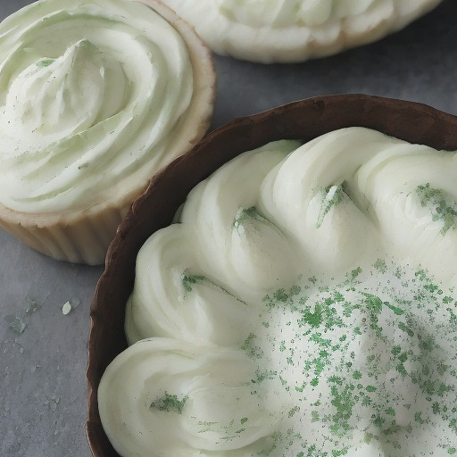

デザート
抹茶×濃厚ホワイトチョコ：悪魔の甘酸っぱいマイルドな衝撃！

抹茶と濃厚ホワイトチョコレートの意外な組み合わせで、マイルドで悪魔的な味覚を味わえるレシピ！ 香りの豊かな抹茶とクリーミーなホワイトチョコレートが絶妙なハーモニー！
💡 こんな時・こんな人におすすめ！
特別な日やちょっとしたご褒美に、特別な気分を味わえるデザートレシピ
📋 必要な材料（ポストイット風）
材料リスト 1
- 抹茶ソース100g
- 濃厚ホワイトチョコレート200g
- 生クリーム200ml
材料リスト 2
- 生粉50g
- 薄力粉50g
🍳 作り方ステップ
1
抹茶ソースを作る：抹茶 powder を水で溶かし、お好みで砂糖を加える。
2
ホワイトチョコレートを作る：濃厚ホワイトチョコレート を鍋に入れ、弱火で溶かす。
3
生地を作る：生粉と薄力粉を混ぜ、水と生クリームを加えて生地を練る。
4
完成：抹茶ソースを生地に、ホワイトチョコレートを乗せた後に、抹茶ソースを塗る。